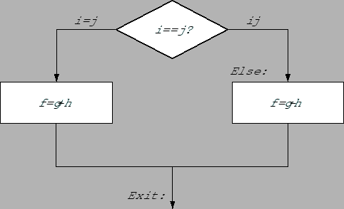

ตัวแปรห้าตัวประกอบด้วย f, g, h, i, และ j เก็บไว้ในรีจีสเตอร์ $s0 ถึง $s4 จงแปลงชุดคำสั่งต่อไปนี้ให้เป็นภาษาแอสแซมบลีของ MIPS
if ( i == j ) f = g + h; else f = g - h;
รูป 2.5 แสดงการทำงานของโปรแกรม ซึ่งประหนึ่งว่าการเขียนคำสั่งควรเริ่มจาก beq อย่างไรก็ตามการเขียนคำสั่งจะสามารถทำได้อย่างมีประสิทธิภาพมากกว่าโดยการเลือกคำสั่งทดสอบที่ทำงานตรงข้ามกัน เพื่อให้ชุดคำสั่งที่ตามมาเป็นชุดในคำสั่งในส่วนที่อยู่ใน then ของ if
|

|
bne $s3, $s4, Else # go to Else if i != j
คำสั่งต่อมาเป็นคำสั่งเพื่อทำการบวกได้แก่
add $s0, $s1, $s2 # f = g + h (skipped if i != j)
หลังจากการบวกเราต้องออกจากชุดคำสั่ง if โดยการเรียกคำสั่ง j ซึ่งเป็นคำสั่ง unconditional branch ที่เป็นการกำหนดการควบคุมไปสู่อีกตำแหน่งหนึ่งโดยไม่มีเงื่อนไข
j Exit # go to Exit
ในส่วนของ else เราสามารถใช้หนึ่งคำสั่งและทำเครื่องหมายว่าเป็นจุดของการเริ่มชุดคำสั่งในส่วนของ Else เราจะได้
Else: sub $s0, $s1, $s2 # f = g - h (skipped if i = j) Exit: